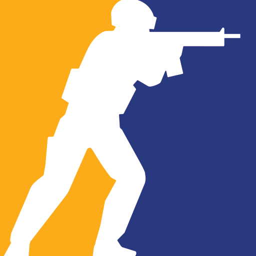
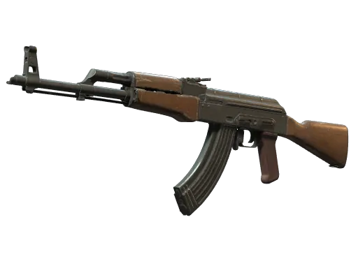
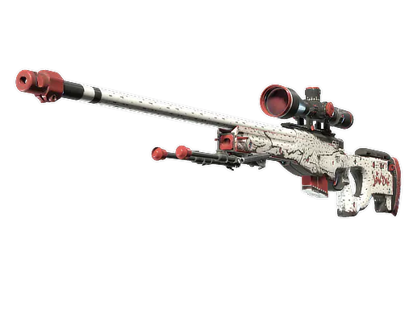
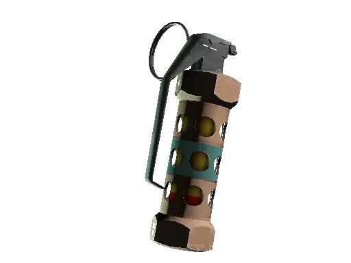
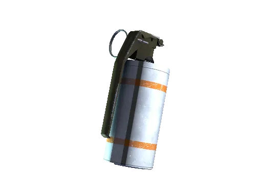
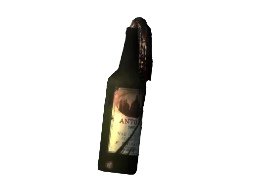
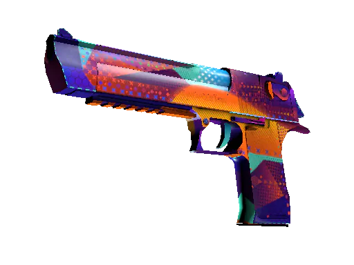

IGL
Lee el mapa, decide la estrategia y da las calls en vivo.

Así como el software se construye por etapas, una ronda ganada no es suerte: es lectura de mapa, estrategia y coordinación de equipo, ejecutadas bajo presión.
> bind "k" "buy ak47"
> bind "j" "buy flashbang"
> radio "roger that"
> equipo.ejecutar("A_rush")
> ronda_ganada = true
Info de rotaciones, economía rival y control de mapa antes de mover una ficha.
Calls claras, roles definidos y utility sincronizada entre todo el equipo.
El plan se ejecuta rápido, sin dudar, adaptándose si algo sale distinto.
Lee el mapa, decide la estrategia y da las calls en vivo.
Abre el sitio primero, absorbe la info y crea espacio para el equipo.
Controla ángulos largos y define duelos clave a distancia.
Utility, trades y cobertura para que la ejecución no se caiga.
Se decide qué comprar según el dinero del equipo.
Se busca información de posiciones y rotaciones rivales.
El equipo se mueve según la info recolectada.
Se ejecuta la jugada con utility y timings sincronizados.
Se defiende la bomba controlando ángulos clave.
Se revisa la demo para corregir errores en la próxima ronda.

AK-47 Daño alto
AWP One-shot
Flashbang Entradas
Smoke Bloqueo visión
Molotov Control área
Deagle Eco roundsEs leer el juego, coordinar con tu equipo y ejecutar sin dudar.
Vuelve al inicio